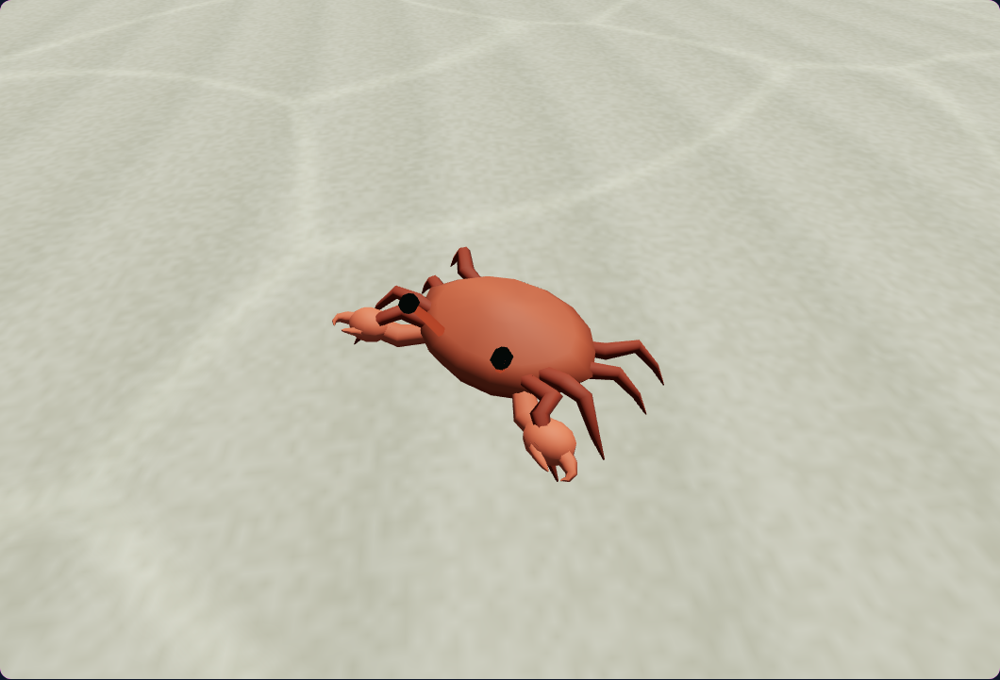
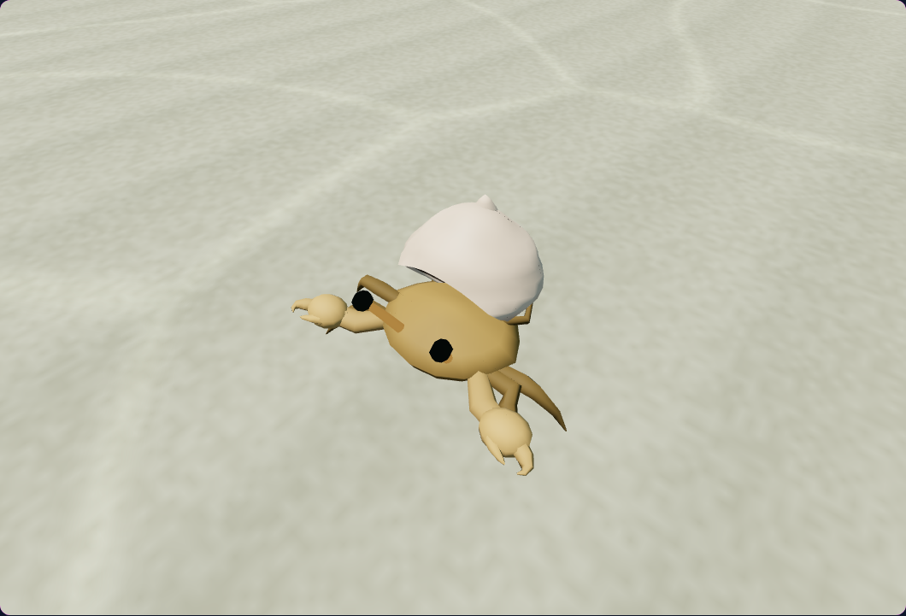
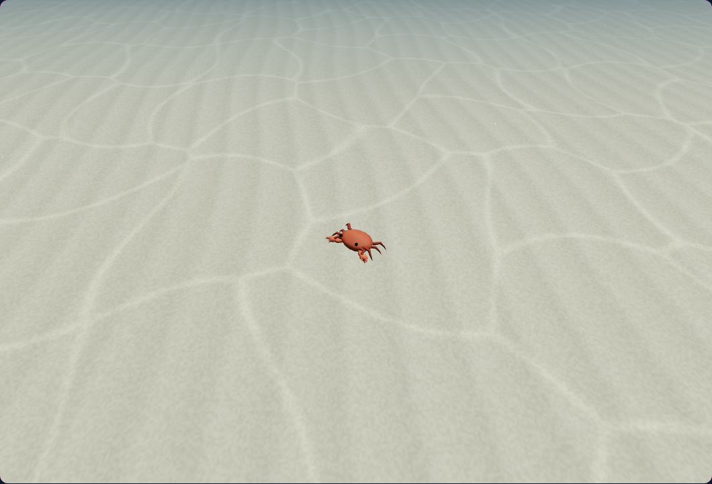
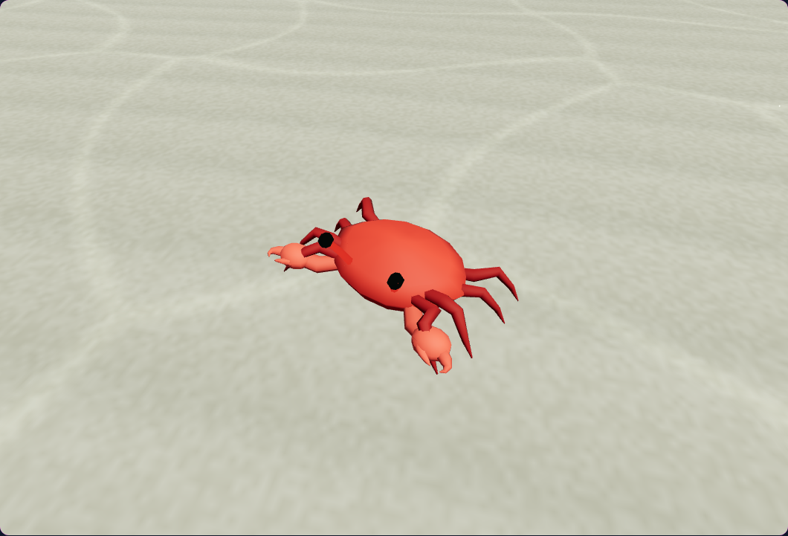
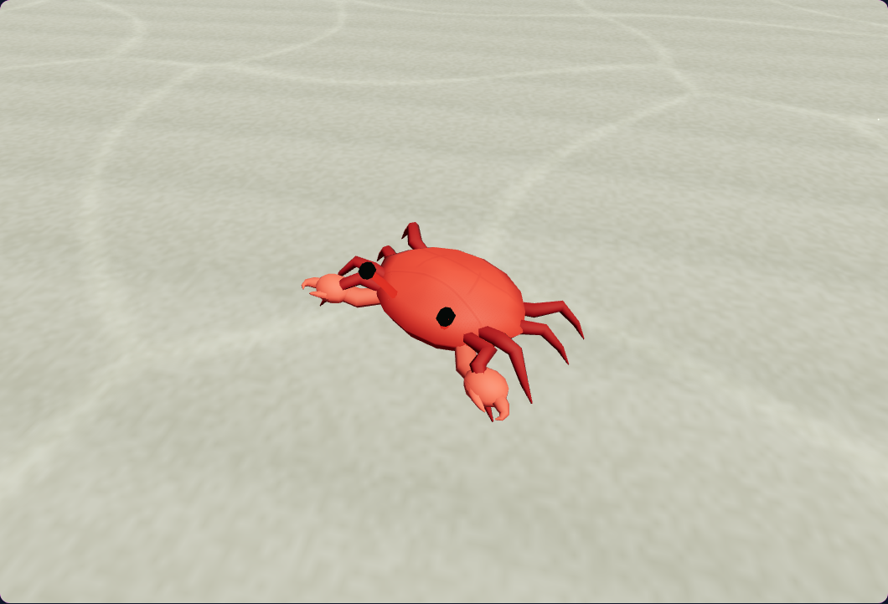
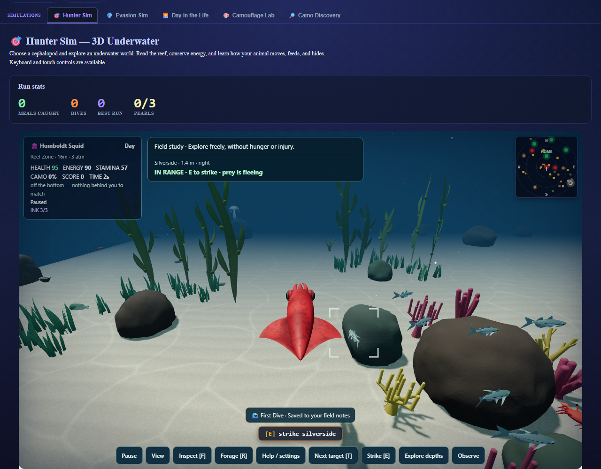
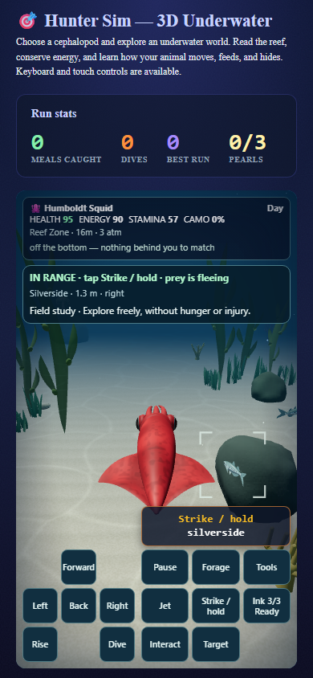

Crab finish and clearer hunting
Subtle dorsal divisions, mottling, and filtered pores give the retained crab bodies more surface detail. Open target brackets face the camera and follow prey after movement. Range, depth, and recovery transitions reach the HUD in the same frame.
32 CPU checks and 15 native browser scenarios passed. Changes remain uncommitted. Evidence notes · Verification
The paired images are seeded, paused diagnostics with matched actor poses, camera, bounds, and original world lighting. Other mesh visibility is masked so the crab finish can be compared. They are not full-world before/after captures.
Rock crab

Before Current
CurrentHermit crab

Before Current
CurrentDistant rock crab

Before Current
CurrentRed crab

Before
CurrentCurrent ordinary dive
Desktop and phone views use the simulator's native movement and pause controls. Actors, camera transforms, visibility, and game-state fields are not positioned by the runner.

Desktop approach
Phone approach